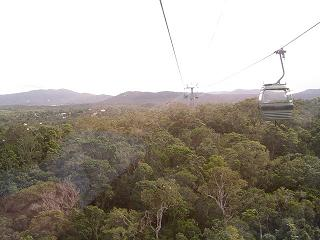
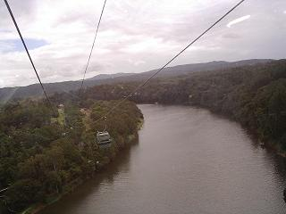
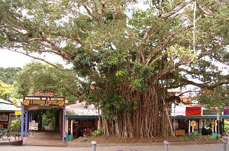

続きを見る
続きを見る

手荷物はすでに朝からホテルに届いているとはいうものの、その持ち主である私たちがホテルに足を踏み入れるのはこの時が初めてなので、フロントでチェックイン（といっても、名前を告げるだけですが…）をしてルームキーを渡されるのですが、乗るべきエレベータを指差されて、ルームナンバーを頼りに３階の自分たちの部屋を探して入るという、まるでちょっと外出をして戻ってきたかのような気分にさせるざっくばらんな応対ぶり…（－ｖ－
部屋に入るなり昨日のお昼過ぎから履き続けているスニーカーとソックスを脱ぎ捨て、裸足で歩き回る床の
なんと気持ちのいいこと…
つくづく畳星人だなぁと思いながら、ベッドの上に座り込みます。
いやぁーほんっと 長い長い一日でした。
「お先にどうぞ」
というお言葉に甘えて、カラスの行水派である私はザバザバッとお風呂を使い、ベッドで横になっているうちにいつの間にか眠ってしまったようで、夜中に目が覚めてみるとセミダブルほどもあるベッドの端っこの方でずり落ちそうになって寝ておりました。（＾-＾；
「誰かがまだ二人くらい寝に来るのじゃないかと思うくらい、スミッコの方で寝てるものだから笑っちゃった！」
翌朝になってもその有様を思い出してか、Tさん大爆笑。A(＾ｖ＾；
なぜか海外に行くと毎度のようにおかゆが食べたくなるので、今回は食器棚の引き出しの中で眠っていた使い捨てのスプーンと一緒に、レトルトのおかゆと梅干を二つ持参して行き、早速それを二日目の朝食とすることとなって、
さて、それをどう温めたのかといいますと、Tさんはいつも小さな洗面器を旅行アイテムのひとつとして持っておりまして、それにレトルトパックとポットのお湯を注ぎ、ビニール袋で蓋をして、
待つこと三分
では早すぎる気もしますが、トイレに入ったり着替えをしたり適当に温まった頃を見計らって、機内食についてきたものを持ってきたプラスチックのコップに注ぐと、思っていたより温まっており
なんだかとても気分の落ち着く朝食となりました。
ちなみに、ケアンズの水道水はそのまま飲んでも大丈夫だそうですが、お腹に自信のない人はミネラルウオーターを買ったほうがよいとガイドブックに書いてあり、旅なれたTさんは毎晩寝る前にポットいっぱいにお湯を沸かして、それを冷ましておいてくれたので、滞在中ミネラルウオーターは一度も買いませんでした。
話が長くなるので前回では省略しましたが、前日、ツアー事務所が開くまでの間に二日目の行き先も決め、申し込みも済ませてあったので、キュランダと言う熱帯雨林の奥地にある小さな村へ向かうバスに乗り込んでいざ出発です。
Tさんは以前行ったことがあるということでしたが、ゴンドラで往復はしたものの雨のため景色は何も見えず、村の観光もあまりしていないということから、結局は二日とも私の希望通りにことが運んでしまいました。（_w_ ;
旅行前にネットで調べてみたところ、ケアンズの駅からキュランダ鉄道に乗って、片道１時間４５分で行ける終着駅なので、このくらいならば私たちだけでも行けそうです。
が、雨林の中をのんびりと列車で行くのもいいものですが、折角あるのですから雨林の上を行くスカイレールにも乗ってみたいというものです。
料金は鉄道と同じ（片道A$35 往復A$50）だということまではわかったのですが、その乗り場となる駅までの交通手段がないようで、ケアンズからの所要時間がどのくらいかかるのか、ツアー事務所の人に聞いてみたところ、
「タクシーの待っているようなところじゃないですからねぇ…」
と渋い顔。
「自由散策というコースもあって、それならば鉄道もスカイレールも乗れますが…」
と言われ、ここが私の欠点である押しの弱いところで、結局はA$110のツアー料金を払うことになってしまいましたが、実際にバスに乗って行ってみると、わずか１５分くらいで乗り場になっているカラポニカ駅に到着し、なんだ、こんなくらいならホテルからタクシーに乗って来ても大したことじゃないじゃん…
と、おばさん冒険ができなかったことを残念に思いましたが、様々な案内をしてくれる添乗員付きならではのツアーも、ガイドブックでは知ることのできない情報を入手することができ、自由行動もできたこのツアーを選んで正解だったのかもしれないと、今頃になって思い始めています。
１９９５年の秋にできた全長７．５kmの途中には二ヶ所の駅があり、私たちが便乗した一日観光ツアーはどうしても乗り換えなければならない駅だけを下車散策ということになっていたようで、
「くれぐれもバロンフォールズ駅では降りないようにして下さい！」
繰り返し念を押された上で、まるでベルトコンベアの上に乗ったじゃが芋かかぼちゃのように、グループごとに仕分けられて、次から次へとやってくる６人乗りのゴンドラに押し込まれました。
うわっ！ うわっ！
高いところは苦手な私ですが、
このスカイレールを作る際、世界遺産である熱帯雨林を破壊しないために様々な工夫がなされ、工事のための道路は造らず、ゴンドラの重みを支える鉄柱などの資材はヘリコプターで運搬したとバスの中で説明されていただけに、
自然のままの森の上を行くってどんな感じなのかとワクワクしており、ガラス窓に張り付いて下を見ていましたが、眼下に広がる樹木の上に寄生している植物や鳥の巣などが手に取るようにはっきり見えるさまに目も心も奪われておりました。

散策時間も入れると１時間３０分をかけて空中散歩をするわけですが、私がこれまでに乗ったケーブルカーとかゴンドラというものは、高い山の上まで体力を使うことなく運んでくれる乗り物という概念しかなく、こんな風に人が歩くことのできない森林の上にケーブルを走らせて、自然のままの雨林を上から見ようなどという奇想天外なことを一体誰が考えたのかと目を見張るばかりです。
いくつもの山々が集まって何処までも何処までも続く緑の木立の上では、のどかに鳥たちが飛び交い、華麗な白ふくろうなども見ることができると聞いていたのですが、残念ながらそれらしき姿をみつけることはできませんでした。
ところどころに雨雲が漂っているのか、小雨が降ったりやんだりしていましたが、はるか下に見える谷の方に虹が架かっているのをみつけたりしている間に乗換駅であるレッドピークに到着し、ゴンドラから降りた時には幸いにも雨は降っていませんでした。
イケメン添乗員さんについて散策道に入り、まっすぐに空を目指して伸びる大木の説明を聞きながら写真を撮ったりしていると、いつの間にか置いていかれてしまったようで、人の流れについて行くと１０分足らずで散策は終わってしまい、再びゴンドラに乗って飽きることなくあちこちを見回していると、下の方にちらほらと舗装された道路が見えましたが、長い長いレールの上を走っているはずの列車や線路はみつけることができませんでした。

バロン川という大きな川の向こうがキュランダですが、ゆったりと流れているこの川が水量の多い時には激流となっているそうで、１～3月の雨季にはさぞかし豪快な眺めであろうと思いますが、正直なところ偶然ながらも雨季の時期でなくてよかったとほっとしました。（＾ｖ＾；
スカイレールの駅を出ると左手からやって来る道路が正面に向かって延びており、その道路に沿って右手にほんの少し行くと鉄道の駅へ向かう誇線橋があり、そこから駅の屋根が一部見えておりました。
更に道路に沿って進んでいきますと、道は手入れの行き届いた散歩道に枝分かれしますが、登り坂になっているその道端に植えられている花々を眺めながら、歩いて（１０分くらいだったと思いますが）行きますとやがて元の道路沿いの道となり、右側に店が見えてきます。
先を歩いていた添乗員さんが立ち止まって私たちを待っていたのは、何軒かの店の前を通り過ぎたある飲食店の前で、
「この道をまっすぐに行って消防署のところを右に曲がればワイルドライフパークなどのあるところへ行けます」
と、親切に道案内までして、自由行動である私たちをツアーから切り離して立ち去ろうとします。
その場に立ち止まったときから目についていたものがあり、これだけは聞いておかなければ…と、
「質問！」
「あのー木 なんの木 気になる木ー」
何かのコマーシャルじゃないんですが、それはそれは不思議な木が道路の真ん中に立っていたのです。

「あれは、寄生した植物が育ったもので、恐らく元々あった樹木は死滅しているでしょう…」
とのことで、通称
クビシメの木
と呼ばれているのだそうです。
よくよく見ると、細く何本かになって地面から伸びていると思われた物は地面に向かって伸びた根で、屋根より高いところから伸びた幹にはそれぞれに逞しい枝葉が広がっており、ご覧の通り伸び伸びと育っていました。
先ずは行けるところまでは行ってみるといういつものパターンで、帰りに寄りたい店を物色しながら外れまで行くと、ネットで調べると申し合わせたように紹介されていたアイスクリーム屋さんがあり、
美味しいと評判の物ならば食べてみなくては…
と、それぞれに好みのものを買って食べてみましたが、私としては甘みが極端に抑えられているというだけで、ちょっとがっかりでした。（＾。＾；
作成:2005-04-02
続きを見る